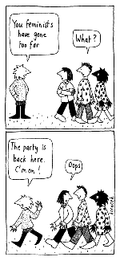

|
The third characteristic of web page writing is the blurring of boundaries between words and images. The technology of the web encourages this: in work devised for the screen it is nearly as easy, and as inexpensive, to insert an image instead of written text. For instance, the title of this page - 'IMAGES' - is a simple image prepared in Photoshop (view 'SOURCE' to check this out).
This lesson introduces you to working with images - a huge topic in itself. I offer some suggestions for obtaining images, show you how to insert an image in a web page, and how to make a hyperlink from that image.
OBTAINING IMAGES
There are three main ways to get hold of images for use in web pages.
- Use an image from the clip art packages offered with systems such as Microsoft Works.
- Take images from the web. This is remarkably easy:
- If you see an image you like on a web page, move your mouse over the image.
- Right click your mouse, and select 'Save picture as'
. (Try this with the title image at the top of the page).
- Save the file: it is best if you create a New Folder called something like IMAGES, and place this folder in your WEBPAGES folder. The saving is very similar to the process involved in saving a Word or WordPerfect file; the main difference is that you will notice the file is called 'something.jpg' (or jpeg) or 'something.gif'. You can change the name (the 'something' of the file designation) but you must retain the format extension (ie jpg/jpeg or gif).
COPYRIGHT: Though few people are likely to be concerned about you taking an image for personal use, you must always respect the artists right over their work, as you would for work offered in books and journals. For master's essays, which are not published work, it is acceptable to use images without asking for permission SO LONG AS YOU SUPPLY A FULL REFERENCE. For Master's dissertations, and especially for PhD work, the area is more complex and the issues of copyright are still being resolved. If in doubt, write to the web designer and ask for permission.
- Create your own.
- Use any image-manipultaing software.
This area of graphics manipulation is obviously a huge area in its own right, and beyond the scope of the course. However, due in part to the popularity of digital photography basic image manipulation software is widely available and easy to use: if you have computer you might well have something bundled in with your computer software. Simple programmes can obtained most months from the 'free' CDs on computer magazines (.Net is one of the best, but check out the others too). You can also download many free programmes - try finding what you need though a GOOGLE search. Of course, you can only use this new material if you have your own computer, as you cannot install new programmes on to the University system.
- Scanners can be very useful. Scan in your image at no more than 150 dpi (dots per inch), though I use 70 dpi for preference. If you do it denser than this the image will take a l-o-n-g t-i-m-e t-o d-o-w-n-l-o-a-d when you open your webpage. You can use photos, published images, and bits and pieces (lace material, crumpled paper, 3D objects ...)
Don't forget to save the image as a gif or jpg file (ie save it in that formant and give it the appropraite suffix).
INSERTING IMAGES
The tag used is:
< IMG SRC=image.jpg > or < IMG SRC=image.gif > Making your inserted image look good
You can place your image "left" or "right" on the page by using a modifying tag like so:
< IMG SRC=image.jpg ALIGN="right" >
When an image is aligned "left" or "right" written text will wrap around the image. You can add space between words and image by adding the attributes VSPACE (for vertical space)and HSPACE (for horizontal!)
< IMG SRC=image.jpg ALIGN="right" VSPACE="5" HSPACE="2">
MAKING LINKS FROM IMAGES

This is done in exactly the same way as linking text files, by using the < A > tag.
The basic code for inserting the image to the left is:
< A HREF="http://www.york.ac.uk/inst/cws/ " >
< IMG SRC="toofar.gif" ALIGN="left">< /A>
the url after < A HREF > is the name of the destination site (in this case the CWS home page)
'too far.gif' is the name I gave to the linking image - the cartoon.
If I had wanted to remove the default border from the cartoon linking image I could have added "BORDER="0" inside the < A > tag.
EXERCISE
- Surf the web and pick up a few images as instructed above. Save them in your IMAGES folder.
- Insert an image in one of your web pages with some text. Move the image around: Align it 'left' or 'right' and look to see what happens. Try adjusting the 'V' (vertical) and 'H'(horizontal) properties. Add and remove the image border.
- When you are happy with the format of the page, make a link from the image to another web page.
links:
lesson one: A Simple Web Page lesson two: Simple Formatting
lesson three: Linking Web Texts
back to wws index
|